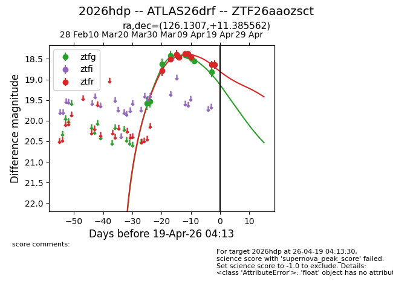
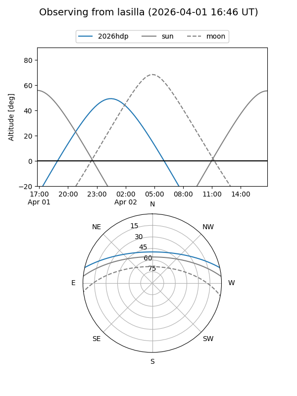
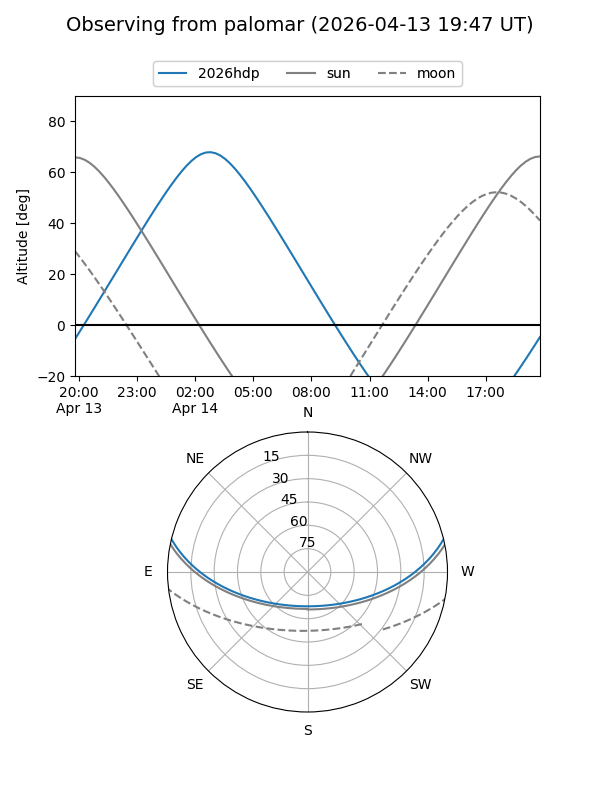
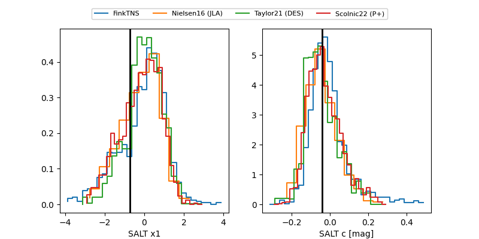

2026hdp
Target 2026hdp at 2026-04-19 04:17
Aliases and brokers:
FINK: link
Lasair: link
ALeRCE: link
TNS: link
YSE: link
alt names
ZTF26aaozsct (ztf,fink_ztf)
2026hdp (tns,yse)
ATLAS26drf (atlas)
Coordinates:
equatorial (ra, dec) = 126.1307,+11.38556
equatorial (HMS+DMS) = 08:24:31.37,+11:23:08.02
galactic (l, b) = (212.9901,+25.76726)
Flags:
Photometry:
last ztfg=18.82, ztfr=18.64
9 ztfg, 9 ztfr detections
Lightcurve

Visibility


Additional plots
